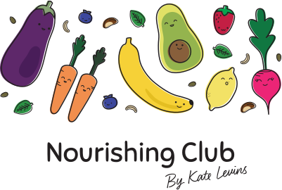

<link rel="import" href="../../bower_components/polymer/polymer.html">
<dom-module id="nc-nav">
	<template>
		<style include="shared-styles">
			header {
				margin: 2em 0;
			}

			iron-selector {
				display: flex;
				justify-content: space-between;
			}

			a {
				font-weight: 500;
			}

			.logo {
				display: flex;
				flex-flow: column nowrap;
				align-items: center;
				margin: 4em 0;
			}

			.nourishing {
				width: 40%;
			}

			.iron-selected {
				text-decoration: underline;
			}
		</style>

		<header class="wrapper padded">

			<div class="logo">
				</img>
			</div>

			<iron-selector attr-for-selected="name" selected="{{selected}}">
				<a href="/about" name="about">About</a>
				<a href="/" name="">Recipes</a>
				<a href="/catering" name="catering">Catering</a>
				<a href="/consultation" name="consultation">Consultation</a>
				<a href="/classes" name="classes">Classes</a>
				<a on-tap="smoothScroll" title="footer">Contact</a>
			</iron-selector>
		</header>

	</template>
	<script>
	Polymer({

		is: 'nc-nav',

		properties: {
			selected: Object,
		},

		elmYPosition: function(eID) {
			var elm = document.getElementById(eID);
			var y = elm.offsetTop;
			var node = elm;
			while (node.offsetParent && node.offsetParent != document.body) {
				node = node.offsetParent;
				y += node.offsetTop;
			}
			return y;
		},

		currentYPosition: function() {
			// Firefox, Chrome, Opera, Safari
			if (self.pageYOffset) return self.pageYOffset;
			// Internet Explorer 6 - standards mode
			if (document.documentElement && document.documentElement.scrollTop)
				return document.documentElement.scrollTop;
			// Internet Explorer 6, 7 and 8
			if (document.body.scrollTop) return document.body.scrollTop;
			return 0;
		},

		smoothScroll: function(e) {
			this.set("links", false);
			var eID = e.target.title;
			var startY = this.currentYPosition();
			var stopY = this.elmYPosition(eID);
			var distance = stopY > startY ? stopY - startY : startY - stopY;
			if (distance < 100) {
				scrollTo(0, stopY);
				return;
			}
			var speed = Math.round(distance / 100);
			if (speed >= 20) speed = 20;
			var step = Math.round(distance / 25);
			var leapY = stopY > startY ? startY + step : startY - step;
			var timer = 0;
			if (stopY > startY) {
				for (var i = startY; i < stopY; i += step) {
					setTimeout("window.scrollTo(0, " + leapY + ")", timer * speed);
					leapY += step;
					if (leapY > stopY) leapY = stopY;
					timer++;
				}
				return;
			}
			for (var i = startY; i > stopY; i -= step) {
				setTimeout("window.scrollTo(0, " + leapY + ")", timer * speed);
				leapY -= step;
				if (leapY < stopY) leapY = stopY;
				timer++;
			}
		},

	});
	</script>
</dom-module>
